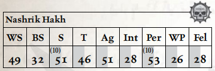

纳什里克·哈克与一队钛族残部一同被俘，在众多同族相继殒命之后，她幸存了下来。克鲁特人的力量、敏捷、感官敏锐度——以及最重要的，其基因的可塑性——使她的族人被分往德雷卡鲁斯的实验室与枯刃斗教的角斗坑。前者之中，除德雷卡鲁斯外无人知晓他们的命运；后者之中，唯有纳什里克幸存——她的族人如同野兽一般被一次次驱入竞技场，无休无止。
纳什里克自己也远非完好无损。在早期的一场战斗中获胜后，她趁隙吞噬了敌人的尸体以充饥，却发现巫灵们被药物污染的血肉与她的生理构造产生了不良反应。毒素涌入她的身体，灼烧她的大脑，她竭力在迷失中维系自我，然而那种遗忘一切的无脑凶暴正一天天逼近。

移动： 5/10/15/30 承伤： 16
护甲： 粗皮甲（手臂2，躯干2）。 总坚韧加值：4
技能： 警觉（Per）+20，隐蔽（Ag）+20，恐吓（S），无声移动（Ag）+20，听说语言（克鲁特语）（Int），听说语言（钛语）（Int），生存（Int）+20，追迹（Int）+20。
天赋： 基础武器训练（原始、实弹），狂暴冲锋，狂暴，强化感官（全部），闪电反射，近战武器训练（原始），多语言者，冲刺，迅捷打击。
特性： 天生武器（喙），超自然感知（x2），超自然力量（x2）。
武器： 单分子剑（近战；1d10+10 R；穿甲2；平衡），喙（近战；1d5+10 R；原始）。
装备： 一根来自她曾经的塑形者头顶的残破翎羽。